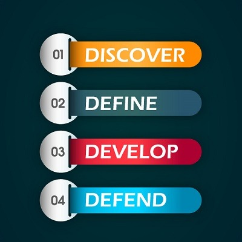
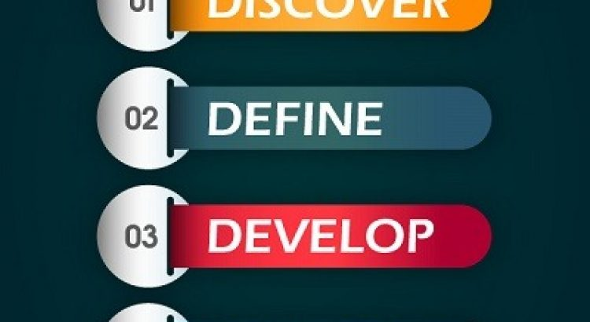

What The Heck, Is Reputation Intelligence?And why should I care?
Reputation Intelligence is the ability to identify and manage your words and behaviors.It consists of three skills: Self-Awareness achieving your authentic self, Self Management – disciplining your actions and reactions to achieve bigger goals, and Social Management – mastering and innovating inside and outside your sphere of influence.
Reputation Intelligence (RI) is a core competency of the Reputation Factor strategy for personal, professional and youth development programs.It is the purest form of reputation management, beginning with your 4D and extended beyond ORM (online reputation management).RI is an examination of self, with self-awareness steps which lead to your unique path to authenticity and attracting a sphere of transformational influence.The RI process end goal is to capture a full understanding of the impact your words and behaviors have on the people around you.Also to master the skills needed to pinpoint what others need from you by understanding their words and behaviors.We will grow an atmosphere of understanding and acceptance rather than judging.The program using a process that eliminates the emotional thinking, ego or bias that tends to skew results and leads to false starting points.Thinking or feeling is different than knowing what one’s state of your Reputation.Having an accurate depiction of your current reputation is paramount to benchmark where you are beginning to monitor and gauge your progress to success.
Perception is one of the tools we use to build RI.Opinion is what others see or feel about you or one has an intuitive recognition of you.'Your reputation perceives you' is an example of automatic recognition because you may not have ever met the person.Balanced and meaningful actions and reactions can result in stronger relationships with family, friends, professional colleagues and associates and clients.With the trademarked process to the 4Ds, you can unlock your RI genius and focus on what is essential.The results will directly depend on one’s ability, to be honest, persistent and dedicated to self-improvement and advancement.
Why should you care about RI?The RI process creates a how-to plan to reach your goals, with guided growth and innovation in your life or industry.Self-confidence grows with structured steps based on building and following a personal project with a purpose and goal.
We use the 4Ds of Reputation to build RI
What it is and is not?RI is not a fad or a strategy of the month.It is not easy, quick or temporary.The RI is a permanent, lifelong and life-changing strategy for personal and professional growth.It is custom to your uniqueness and proves itself every day.With improved self-confidence and innovation, you will experience limitless to your potential.It is not magic, its a process of following the steps.RI is logical, not emotional, with a splash of creativity.The process credits everyone with being creative, but many times it was not allowed to shine through.
The 4D process to RI limits risk and does not require paying an astronomical cost.Each step builds on each other which minimus setups to one level.The program using the process is flexible, and updates to the process are made quickly and easily.It is a self-guided step-by-step process outlined in the book, The Reputation Factor.The Reputation Learning Center is a support system and available based on your needs, if at all.
Your RI has become one your most important 'must haves' in our current environment.Start your journal to greatness with Reputation Intelligence today.
Share on Facebook Tweet Follow us
Posted On: 2018-10-01T00:00:00




Content Date: 2018-10-01
Download Date: 2021-07-09
Document ID: L0C04DTXC